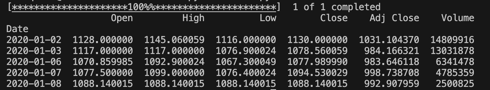
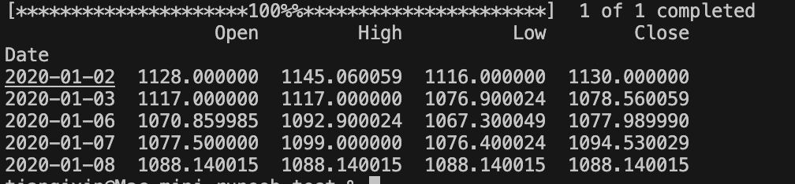
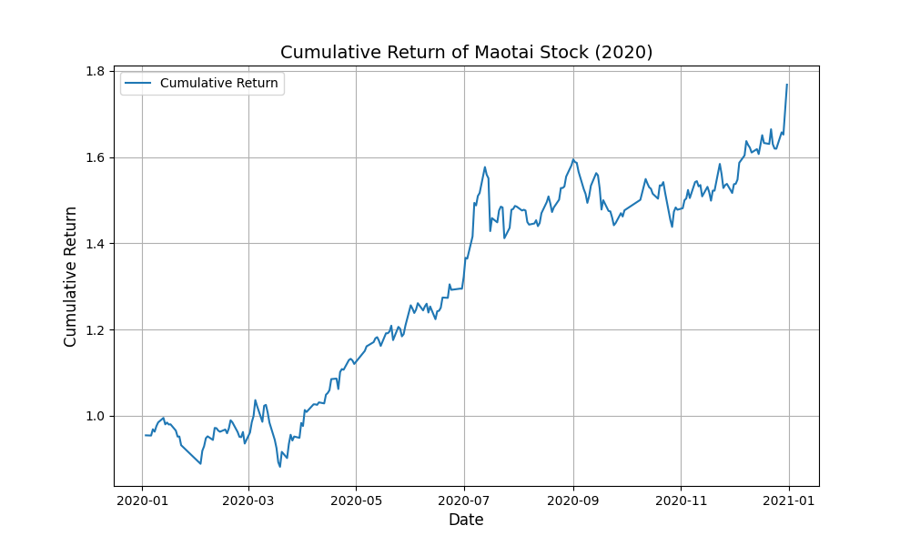

Pandas 株式データ分析
株式データ分析において、pandasは非常に強力なツールであり、株式市場のデータを処理・分析するのに役立ちます。
この章では、yfinance（Yahoo Financeライブラリ）を使用して過去の株式データをダウンロードし、データクリーニング、可視化、テクニカル指標の計算などのさまざまな分析を行います。
yfinanceはPythonライブラリで、Yahoo Financeから株式、ファンド、暗号通貨などの資産の過去およびリアルタイムデータを簡単に取得できます。
pandasを使用することで、これらのデータをDataFrameとして保存し、その後の分析を行うことができます。
- データクリーニング：欠損値の処理、不要な列の削除など。
- データ可視化：株式の時系列グラフ、移動平均線、RSIなどの描画。
- テクニカル指標の計算：移動平均線（SMA）、相対力指数（RSI）など。
- 日次リターンと累積リターンの分析：株式の短期および長期のパフォーマンス評価に役立ちます。
- ボラティリティ分析：株価の変動性を測定します。
その他の金融ライブラリやクォンツ分析については、以下を参照してください：Python クォンツ取引
yfinance のインストール
まず、yfinanceライブラリをインストールする必要があります。方法は次のとおりです：
pip install yfinance --upgrade --no-cache-dir
yfinanceをインストールすると、通常pandasが依存関係として自動的にインストールされます。つまり、yfinanceを使用する際、pandasが提供するデータ構造と機能を直接利用してデータを処理・分析できます。
必要なライブラリをインポートします：
import yfinance as yf import pandas as pd import matplotlib.pyplot as plt import seaborn as sns
株式データの取得
yfinanceライブラリを使用すると、簡単に株式データをダウンロードできます。
通常、yf.download()関数を使用してYahoo Financeから特定の株式の過去データを取得します。
茅台（マオタイ）の株式コードは600519.SSで、そのうち.SSは上海証券取引所の接尾辞です。
yfinanceを使用して株式データを取得します：
例
# 茅台（600519.SS）の株式データを取得、期間は2020-01-01から2021-01-01まで
stock_data = yf.download('600519.SS', start='2020-01-01', end='2021-01-01')
# データの最初の数行を表示
print(stock_data.head())
出力データは次のようになります：

返されるデータには以下の列が含まれます：
Open：始値High：高値Low：安値Close：終値Adj Close：調整済み終値（配当や株式分割などの要素を考慮）Volume：出来高
yf.download()関数は、指定した株式の過去データを含むpandas.DataFrameを返します：
例
# 茅台株式（600519.SS）のデータを取得
stock_data = yf.download('600519.SS', start='2020-01-01', end='2021-01-01')
# データ型を確認
print(type(stock_data)) # 出力は <class 'pandas.core.frame.DataFrame'> になるはず
出力は次のとおりです：
[*********************100%%**********************] 1 of 1 completed <class 'pandas.core.frame.DataFrame'>
データクリーニングと処理
株式データを分析する際、通常はデータクリーニングと処理を行う必要があります。
一般的な手順には、欠損値の補完、不要な列の削除、データ型の変換などが含まれます。
一部のバージョンのyfinanceでは、pandasが自動的にインポートされるため、再度インポートする必要はありません。そのため、yfinanceを使用する際、pandasが提供するデータ構造と機能を直接利用してデータを処理・分析できます。
欠損値を確認して補完する:
例
# 茅台（600519.SS）の株式データを取得、期間は2020-01-01から2021-01-01まで
stock_data = yf.download('600519.SS', start='2020-01-01', end='2021-01-01')
# 欠損値を確認
print(stock_data.isnull().sum())
# 前方補完を使用して欠損値を置き換える
stock_data.ffill(inplace=True)
# または後方補完を使用
# stock_data.bfill(inplace=True)
# 欠損値が処理されたか確認
print(stock_data.isnull().sum())
出力結果は次のようになります：
[*********************100%%**********************] 1 of 1 completed Open 0 High 0 Low 0 Close 0 Adj Close 0 Volume 0 dtype: int64 Open 0 High 0 Low 0 Close 0 Adj Close 0 Volume 0
不要な列の削除：
例
# 茅台（600519.SS）の株式データを取得、期間は2020-01-01から2021-01-01まで
stock_data = yf.download('600519.SS', start='2020-01-01', end='2021-01-01')
# "Volume"列と"Adj Close"列を削除
stock_data_cleaned = stock_data.drop(columns=['Adj Close', 'Volume'])
print(stock_data_cleaned.head())
出力結果は次のようになります：

データ可視化：株価チャートの描画
matplotlibまたはseabornを使用すると、株式データを可視化でき、トレンドや変動を識別するのに役立ちます。
終値の時系列グラフを描画する:
例
import matplotlib.pyplot as plt
# 茅台（600519.SS）の株式データを取得、期間は2020-01-01から2021-01-01まで
stock_data = yf.download('600519.SS', start='2020-01-01', end='2021-01-01')
# "Volume"列と"Adj Close"列を削除
stock_data_cleaned = stock_data.drop(columns=['Adj Close', 'Volume'])
# 茅台の終値チャートを描画
plt.figure(figsize=(10, 6))
plt.plot(stock_data_cleaned['Close'], label='Close Price')
plt.title('Maotai Stock Price (2020)', fontsize=14)
plt.xlabel('Date', fontsize=12)
plt.ylabel('Close Price (CNY)', fontsize=12)
plt.legend()
plt.grid(True)
plt.show()
出力は次のようになります:

株式のテクニカル指標の計算
株式分析では、テクニカル指標（移動平均線、相対力指数RSIなど）が意思決定を支援するために頻繁に使用されます。pandasはこれらの指標の計算に役立ちます。
1. 移動平均線（SMA）
単純移動平均線（SMA）は最も一般的なテクニカル指標の1つで、過去N日間の平均終値を表します。
例
import matplotlib.pyplot as plt
# 茅台（600519.SS）の株式データを取得、期間は2020-01-01から2021-01-01まで
stock_data = yf.download('600519.SS', start='2020-01-01', end='2021-01-01')
# "Volume"列と"Adj Close"列を削除
stock_data_cleaned = stock_data.drop(columns=['Adj Close', 'Volume'])
# 50日と200日の移動平均線を計算
stock_data_cleaned['SMA_50'] = stock_data_cleaned['Close'].rolling(window=50).mean()
stock_data_cleaned['SMA_200'] = stock_data_cleaned['Close'].rolling(window=200).mean()
# 終値と移動平均線を描画
plt.figure(figsize=(12, 6))
plt.plot(stock_data_cleaned['Close'], label='Close Price')
plt.plot(stock_data_cleaned['SMA_50'], label='50-Day SMA')
plt.plot(stock_data_cleaned['SMA_200'], label='200-Day SMA')
plt.title('Maotai Stock Price with Moving Averages', fontsize=14)
plt.xlabel('Date', fontsize=12)
plt.ylabel('Price (CNY)', fontsize=12)
plt.legend()
plt.grid(True)
plt.show()
出力は次のようになります:

2. 相対力指数（RSI）
RSIは、株式が買われすぎか売られすぎかを評価するテクニカル指標です。一般的に、RSIが70を超えると買われすぎ、30未満だと売られすぎを示します。
例
import matplotlib.pyplot as plt
# 茅台（600519.SS）の株式データを取得、期間は2020-01-01から2021-01-01まで
stock_data = yf.download('600519.SS', start='2020-01-01', end='2021-01-01')
# "Volume"列と"Adj Close"列を削除
stock_data_cleaned = stock_data.drop(columns=['Adj Close', 'Volume'])
# RSI指標を計算
delta = stock_data_cleaned['Close'].diff(1)
gain = delta.where(delta > 0, 0)
loss = -delta.where(delta < 0, 0)
# 平均利益と平均損失を計算
avg_gain = gain.rolling(window=14).mean()
avg_loss = loss.rolling(window=14).mean()
# 相対力指数RSIを計算
rs = avg_gain / avg_loss
rsi = 100 - (100 / (1 + rs))
# RSIをデータに追加
stock_data_cleaned['RSI'] = rsi
# RSI曲線を描画
plt.figure(figsize=(12, 6))
plt.plot(stock_data_cleaned['RSI'], label='RSI')
plt.axhline(y=70, color='r', linestyle='--', label='Overbought (70)')
plt.axhline(y=30, color='g', linestyle='--', label='Oversold (30)')
plt.title('RSI Indicator for Maotai Stock', fontsize=14)
plt.xlabel('Date', fontsize=12)
plt.ylabel('RSI', fontsize=12)
plt.legend()
plt.grid(True)
plt.show()
出力は次のようになります:

株式データ分析の応用
実際の株式データ分析では、Pandasを使用して以下のような一般的な操作を行うことができます：
1、日次リターンと累積リターン
株式の日次リターンと累積リターンを計算すると、長期的なパフォーマンスを評価するのに役立ちます。
例
import matplotlib.pyplot as plt
# 茅台（600519.SS）の株式データを取得、期間は2020-01-01から2021-01-01まで
stock_data = yf.download('600519.SS', start='2020-01-01', end='2021-01-01')
# "Volume"列と"Adj Close"列を削除
stock_data_cleaned = stock_data.drop(columns=['Adj Close', 'Volume'])
# 日次リターンを計算
stock_data_cleaned['Daily_Return'] = stock_data_cleaned['Close'].pct_change()
# 累積リターンを計算
stock_data_cleaned['Cumulative_Return'] = (1 + stock_data_cleaned['Daily_Return']).cumprod()
# 累積リターンを描画
plt.figure(figsize=(10, 6))
plt.plot(stock_data_cleaned['Cumulative_Return'], label='Cumulative Return')
plt.title('Cumulative Return of Maotai Stock (2020)', fontsize=14)
plt.xlabel('Date', fontsize=12)
plt.ylabel('Cumulative Return', fontsize=12)
plt.legend()
plt.grid(True)
plt.show()
出力は次のようになります:

2、株式のボラティリティ
ボラティリティは株価の変動を測定する指標です。
通常、リターンの標準偏差を使用して株式のボラティリティを測定できます。
例
import matplotlib.pyplot as plt
# 茅台（600519.SS）の株式データを取得、期間は2020-01-01から2021-01-01まで
stock_data = yf.download('600519.SS', start='2020-01-01', end='2021-01-01')
# "Volume"列と"Adj Close"列を削除
stock_data_cleaned = stock_data.drop(columns=['Adj Close', 'Volume'])
# 日次リターンを計算
stock_data_cleaned['Daily_Return'] = stock_data_cleaned['Close'].pct_change()
# 累積リターンを計算
stock_data_cleaned['Cumulative_Return'] = (1 + stock_data_cleaned['Daily_Return']).cumprod()
# 日次リターンの標準偏差（ボラティリティ）を計算
volatility = stock_data_cleaned['Daily_Return'].std()
# ボラティリティを表示
print(f"Daily Volatility: {volatility:.4f}")
出力は次のようになります:
[*********************100%%**********************] 1 of 1 completed Daily Volatility: 0.0181その他の拡張
クリックしてノートを共有
ノートはこの記事の内容の拡張である必要があります！
記事投稿は、ここをクリックしてください
登録招待コードの取得方法
ノートを共有する前に必ずログイン！
登録招待コードの取得方法